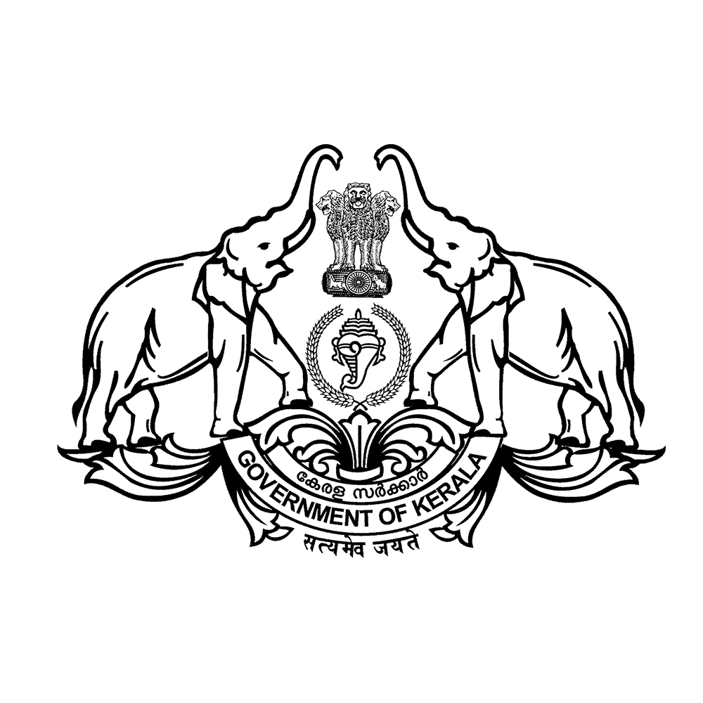
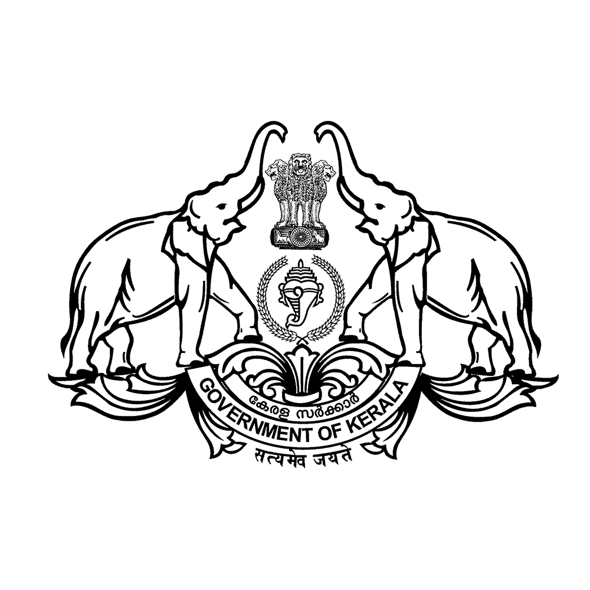

Chairman’s Message

Benny Thomas Puthuparambil
“St. Antony's College Peruvanthanam was founded in 2013 by late Rev. Dr Antony Nirappel, the illustrious educational visionary, innovative and resolute catholic priest who knew...
Principal's Message

Dr. Antony Joseph
A warm welcome to all the youthful and vibrant aspirants into SAC family! St. Antony's College Peruvanthanam was founded in 2013 with the aim of nurturing and grooming students...
 
